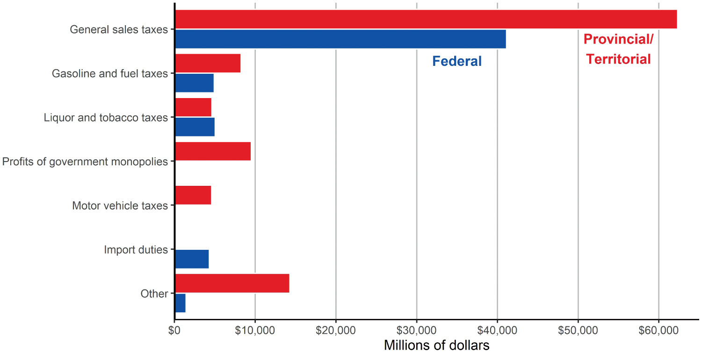
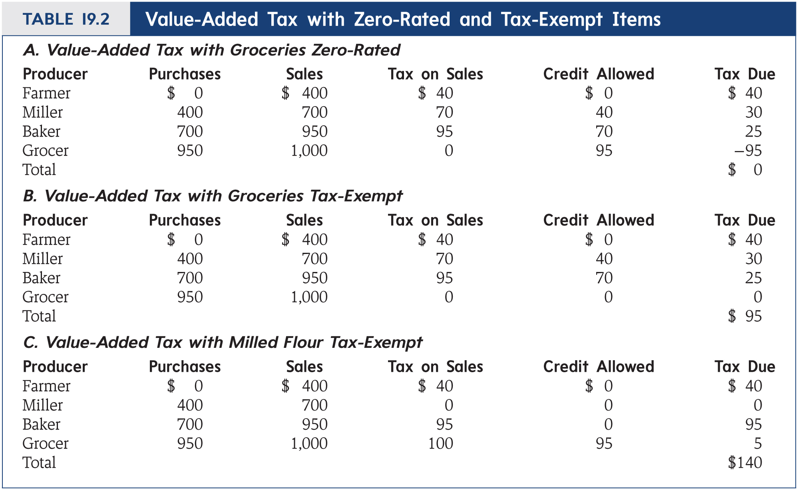
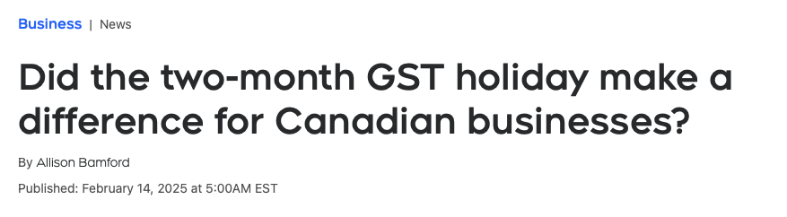
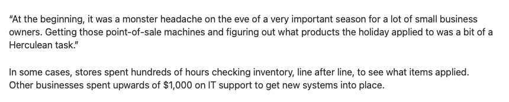
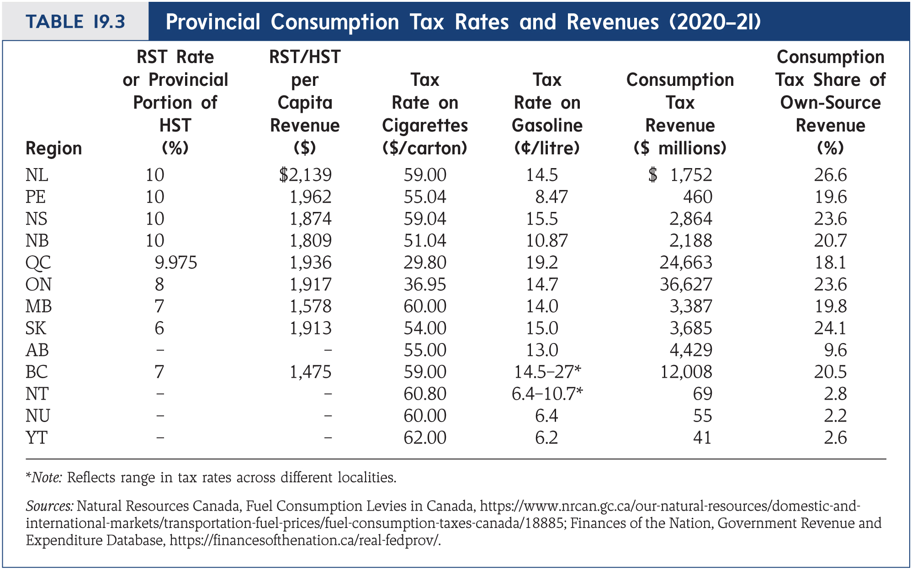

Consumption Taxation
EC313 - Public Economics: Taxation
Justin Smith
Wilfrid Laurier University
Fall 2025

Goals of This Section
Goals of This Section
Define and discuss types of consumption taxes
Analyze the efficiency and equity implications of consumption taxes
Introduce and discuss value added taxes and retail sales taxes
Summarize Canada’s consumption taxation
Compare consumption taxes to income taxes
Overview
Introduction
As we know, purchases of final goods are taxed
These taxes are called consumption taxes
There are several types charged depending on province of residence and the type of good or service purchased
- They have features that distinguish them from each other
In this section we outline the different types of taxes and discuss their merits
Types of Consumption Taxes
Value Added Tax (VAT)
- Charged at each stage of production based on the value added at that stage
- Used globally for taxation of consumption
Retail Sales Tax (RST)
- Charged only at the point of sale to the final consumer
- Used in some provinces in Canada
Excise Taxes
- Charged on specific goods, often to discourage consumption (e.g., tobacco, alcohol)
- Used in all provinces in Canada and by federal government
Custom Duties (tariffs)
- Charged on goods imported into the country
- Used by federal government only
Revenue from Consumption Taxes
Reasons for Consumption Taxes
Administrative Ease
Relative to other taxes, consumption taxes are easy to administer
Import duties are collected at the time of importation
- In the past, relatively few items were imported
- Much more now, but still straightforward to collect
Sales taxes are collected from retailers
Lots of retailers to collect from, but less than for income tax
Some complications can arise for taxable and non-taxable goods
- Example: Less than 6 baked goods at a time are taxable, but 6 or more is non-taxable
- Some basic groceries are zero rated
Efficiency
Economists argue that consumption taxes are more efficient than income taxes
Because they do not distort savings behaviour
- Income taxes reduce the return to saving
- Consumption taxes do not affect the return to saving
Example on next slide illustrates this using two period model
- Assume individuals live for two periods
- One person earns income in period 1 and consumes it all
- Another person earns income in period 1, saves some, and consumes in period 2
- Tax rate on income is 50%, tax rate on consumption is 100%, and interest rate is 10%
Efficiency
| Inc Tax | Inc Tax | Cons Tax | Cons Tax | |
| Item | Homer | Marge | Homer | Marge |
| Income in period 1 | 100.00 | 100.00 | 100.00 | 100.00 |
| Taxes in period 1 | 50.00 | 50.00 | 50.00 | 26.19 |
| Consumption in period 1 | 50.00 | 25.61 | 50.00 | 26.19 |
| Savings in period 1 | 0.00 | 24.39 | 0.00 | 47.62 |
| Interest earnings in period 2 | 0.00 | 2.44 | 0.00 | 4.76 |
| Taxes in period 2 | 0.00 | 1.22 | 0.00 | 26.19 |
| Consumption in period 2 | 0.00 | 25.61 | 0.00 | 26.19 |
| PDV of taxes | 50.00 | 51.11 | 50.00 | 50.00 |
Efficiency
Under the income tax
Saving is discouraged because the return is less
Marge pays more in present discounted value of taxes (51.11) than Homer (50.00)
- So there is a lack of horizontal equity
- Marge and Homer are not taxed the same for the same lifetime income
Under the consumption tax
Saving is not discouraged because the return is unaffected
Marge and Homer pay the same present discounted value of taxes (50.00)
- So there is horizontal equity
- Marge and Homer are taxed the same for the same lifetime income
Efficiency
There is still an excess burden from the consumption tax
- Consumption tax distorts choice between consumption and leisure
- People will substitute towards leisure, creating excess burden
Studies show that the consumption tax has lower excess burden than income tax
Equity
Progressiveness: consumption taxes are often criticized for being regressive
Lower income individuals spend a larger share of their annual income on consumption
But, it is less regressive if we consider
- Lifetime income rather than annual income
- Tax credits and transfers that offset regressiveness
Gender: consumption tax incidents may not be gender neutral
- Some products targeted to women may have higher prices
- A tax levied on product prices may then have a higher incidence for women
Equity
Ability to pay: taxes are levied on actual rather than potential consumption
- Targeted towards chosen spending patterns rather than ability to pay
- A penny-pinching rich person can pay less tax than a poor person
Annual versus lifetime equity: income taxes may generate different lifetime tax burdens
- Example we covered before with Homer and Marge
- Income taxes generated more tax for Marge because she saved
- Consumption taxes generate more even lifetime tax burden
Value Added Taxes
Introduction
Value Added Taxes (VAT) are the most common form of consumption tax globally
In Canada, the GST and HST are VATs
Prior to GST, Canada used a the Federal Sales Tax (FST)
- Sales tax charged at the manufacturing level
The FST had a number of problems
- Small tax base required high tax rates to collect enough revenue
- ** Tax Cascading**: taxes charged on manufacturing inputs to other manufactured goods
- E.g., tax on steel used to make cars
- Taxes were charged on the steel and then again on the car
- Means taxes were charged on top of taxes
Introduction
FST was also complex to administer
GST replaced FST in 1991
- Broader tax base allowed for lower tax rates
- Value added method of taxation eliminated tax cascading
- Input tax credits simplified administration for businesses
Original GST rate was 7%
- Lowered to 6% in 2006, and 5% in 2008
Replaced by HST in some provinces starting in 1997
- HST combines federal GST and provincial sales tax into single value added tax
- Current provinces usng HST are: NS, NB, NL, ON, PEI
Introduction
BC had HST from 2010 to 2013
Reverted back to separate GST and PST after a referendum
Former premier Vander Zalm argued HST was a tax increase
- Tax applied to more goods and services than PST
How Value Added Taxes Work
Production of a final good occurs in several stages
- At each stage, value is added to the good
- Value added is the difference between sales revenue and cost of inputs
Example: Production of a table
- Stage 1: Logger sells logs for $100
- Value added = $100 - $0 = $100
- Stage 2: Lumber mill buys logs for $100, sells lumber for $150
- Value added = $150 - $100 = $50
- Stage 3: Furniture maker buys lumber for $150, sells table for $300
- Value added = $300 - $150 = $150
- Stage 1: Logger sells logs for $100
How Value Added Taxes Work
Taxes are levied on value added at each stage
Total tax is the sum of taxes at each stage
Equivalent to a single tax on the final sale price
Next slide has example of VAT
- Based on production of bread
How Value Added Taxes Work

How Value Added Taxes Work
How does government collect tax only on value added at each stage?
Uses an invoice-credit method
- At each stage firm pays tax on total sales
- But claims a credit for taxes paid by suppliers
Using the bread example:
- Farmer sells wheat for $400, pays $40 in tax
- Miller sells flour for $700, pays $70 in tax, claims $40 credit, remits $30
- Baker sells bread for $950, pays $95 in tax, claims $70 credit, remits $25
- Grocer sells breat for $1000, pays $100 in tax, claims $95 credit, remits $5
Implementation Issues
Some issues make the administration more complex
Some goods and services are zero rated from VAT
- Examples: basic food, prescriptiond drugs, medical devices
Firms with annual sales below $30,000 do not remit HST/GST
Treatment of investment assets (e.g. machines)
- Not clear whether to include full value, depreciated value, or none of it to compute tax liability
- In Canada, usually none of it is included
Implementation Issues
There is a difference between zero-rated and exempt goods/services
- Zero-rated: tax rate is 0%, firms can claim input tax credits
- Exempt: no tax charged, firms cannot claim input tax credits
If goods are exempt at retail stage, it appears the same
- No tax collected on both zero-rated and exempt goods/services
But there are implications for embedded taxes
- Exempt goods/services have embedded taxes that cannot be claimed back
Implementation Issues
Efficiency
We have previously discussed efficient taxes
- Low excess burden, minimal distortions to behaviour
Is it inefficient to add a VAT when we already have income taxes?
- If income tax is already optimal, adding VAT creates distortions and inefficiencies
- If it is not optimal, VAT may improve efficiency by reducing income tax distortions
Improvements to GST
Economists like VATs like GST, but citizens do not
There are ways to improve it
Harmonization
- The HST is an improvement over separate GST and PST
- Reduces compliance costs for businesses
Compliance costs
- For GST/HST, firms must track taxes collected and input tax credits
- Difficult for firms initially because they did not have appropriate systems
- Keeping track of exempt items is also difficult
- Need to make improvements to make tax more efficient
Improvements to GST

Improvements to GST



Improvements to GST
Increase tax base by taxing basic groceries?
- Reduces compliance costs
- Politically difficult
Tax-inclusive pricing
- In other parts of the world, prices include all taxes
- In North America, prices are shown before tax
- Economists prefer tax to be visible, but inclusive pricing is simpler
Provincial Sales Taxes
Introduction
As noted, some provinces combine GST and PST
- GST is a value added tax (VAT)
- PST is a retail sales tax (RST)
RSTs are generally charged only at the point of sale to final consumer
- No input tax credits for businesses
BC, MB, SK, QC all have PST
- AB has no PST
RST vs VAT
An RST can be equivalent to VAT when
- Rate is the same
- Tax base is the same
- RST is charged only on final sales
In bread example, RST would be charged only by grocer
- Grocer sells bread for $1000, pays $100 in RST
- Sum of VAT amounts is also $100
- Difference is that VAT is collected in stages, RST only at final sale
RST vs VAT
They can differ in other circumstances
Big issue with HST in BC was that it had broader tax base than PST
Can also sometimes lead to tax cascading
- If tax is charged on some inputs
Tax Bases
Unlike the HST, the tax base for PST varies from province to province
Prepared meals
- Taxed in MB, SK, QC
- Not taxed in BC
Children’s clothing
- Taxed in SK, QC
- Not taxed in BC, MB
All provinces exempt most food
No economic reason for exemptions; purely political
Tax Rates
Excise Taxes and Custom Duties
Excise Taxes
Excise taxes are specific taxes levied on particular goods
Levied by the federal government and all provinces
Items listed on next slide
Reasons for excise taxes
- Raise revenue
- Discourage consumption of harmful goods (e.g., tobacco, alcohol)
- Correct for externalities (e.g., gasoline, smoking)
- Sin taxes
Excise Taxes

Custom Duties
Custom duties (tariffs) are taxes on imported goods
In the past they were an important source of revenue
- Not so much today
- Lots of trade agreements in place that limit tariffs
Main point of tariffs is to protect domestic industries
- E.g., steel, dairy, poultry
- Can lead to trade wars
Personal Consumption Taxes
Introduction
Today sales taxes are levied on businesses
- Tax is usually added on at checkout
- But businesses remit to the government
- The statutory incidence is on business
Another option would be to levy the tax directly on individuals
- Individuals would pay tax directly to government
- Would file a tax return for consumption
Some argue that it would be better
- Makes it easier to take personal circumstances into account
Personal Consumption Tax
Under this system, people file a tax based on consumption
Based only on what is consumed
- Excludes saving (income not consumed)
How would this work?
A person’s consumption is equivalent to their income minus their change in wealth
- To compute consumption, add income and subtract changes in wealth
- Equivalently, add income and subtract anything not consumed
Like income taxes, there can be deductions and credits
- E.g., charitable donations, medical expenses
Personal Consumption Tax

Hall-Rabushka Flax Tax
Hall-Rabushka proposed one (complicated) flat consumption tax
Works by taxing businesses and individual compensation
Businesses
- Pay tax on sales minus purchases from other businesses
- Also subtract payments to workers
Individuals
- Pay tax on wages and salaries minus personal savings
- Also subtract investment income (dividends, interest)
Flat tax rate applied to each tax base
Hall-Rabushka Flax Tax
Equivalent to a consumption tax levied on businesses
- When consumption tax levied on business, it pays tax on sales minus purchases
- Wages are embedded in prices, so they are implicitly taxed
- With Hall-Rabushka, wages are instead taxed directly at individual level
Only difference is point of collection of certain taxes
There is no system currently in place that does this
Administration Issues
Not feasible if people had to add up all expenditures
But can work if we impute consumption by income minus saving
- Would require tracking of savings
- Can be done by bank accounts
- Potentially problematic for people who save outside of banks
Administration Issues
Some types of consumption are hard to tax
- Consumption benefits generated by things like housing
- E.g., owner-occupied housing
How would we tax this?
One option: tax prepayment
- Tax the house (or car, or other durable) at the point of purchase
- The value of the durable today is the present value of future consumption services (imputed rent)
- The tax charged now should equal to the taxes charged on consumption benefits
Benefits of Personal Consumption Tax
Avoid issues of capital gains and depreciation
- Only consumption is taxed
- So no need to track capital gains
Less investment lock-in
- With income tax, investors may hold onto assets to avoid capital gains tax
- With consumption tax, can sell and reinvest without tax consequences
Removes need for separate personal and corporate tax
Summary
Summary
Consumption taxes are an important source of government revenue
Value added taxes (e.g., GST, HST) are the most common form of consumption tax globally
Retail sales taxes are simpler but can lead to tax cascading
Excise taxes and custom duties are other forms of consumption taxes
Consumption taxes are often more efficient than income taxes
Personal consumption taxes are an alternative way to tax consumption directly
References
References
Rosen, Harvey S., and Lindsay M. Tedds, and Trevor Tombe, and Jean-Francois Wen, and Tracy Snoddon. Public Finance in Canada. 6th Canadian edition. McGraw-Hill Ryerson, 2023.
Gruber, Jonathan. Public Finance and Public Policy. 7th edition. Worth Publishers, 2022.
Bazel, Philip. Marginal Effective Tax Rates for Working Families in Canada. Fraser Institute, 2024.
Hansen, Jeff, and Devan Mescall, and Graham Purse. “Policy Forum: The Effects of Indexation and Inflation on Tax System Design.” Canadian Tax Journal 71, no. 2 (2023): 398-404.